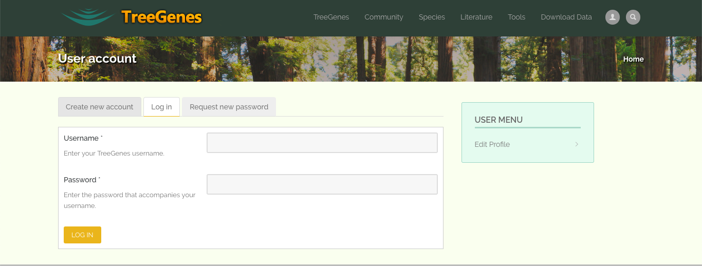
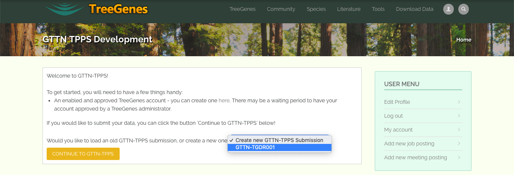

3.1. Example GTTN-TPPS Submission: Landing Page¶
Users can only access the GTTN-TPPS form while they are logged into their Tripal account. This is so that a user can pick up where they left off, should they need to make their submission over multiple sessions. For example, if a user is submitting data through GTTN-TPPS, then realizes that they need to collect some additional information before completing their submission, they can leave the TreeGenes site to collect their additional information, and when they return, all of the data that user entered previously will be stored on TreeGenes, and the user will not need to fill out all of the form fields again.
If the user is not logged in, they are redirected to the login page, where they can login as an existing user or sign up to create a new account.
If the user is logged in, and they have any incomplete GTTN-TPPS Submissions, they will be given the option to continue with one of their old submissions, or create a new GTTN-TPPS Submission.
